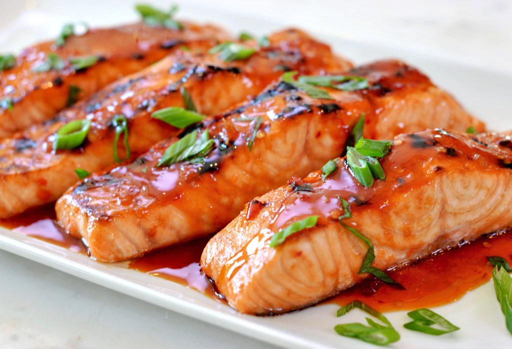
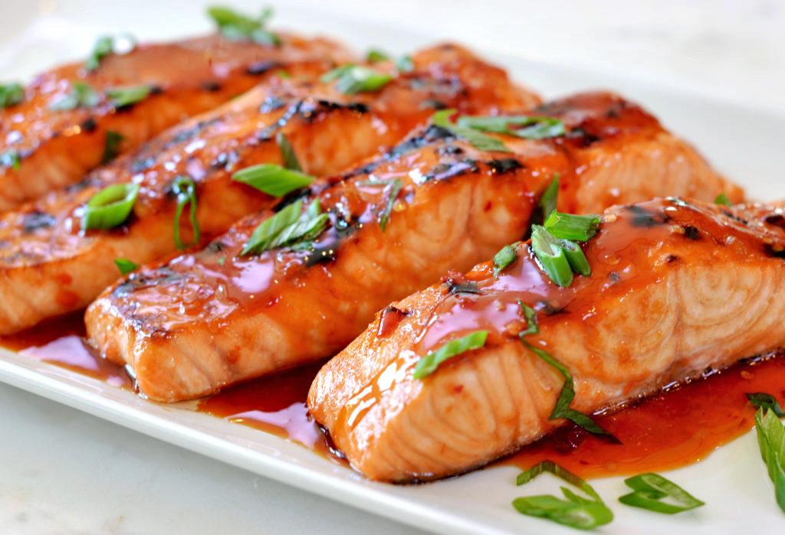
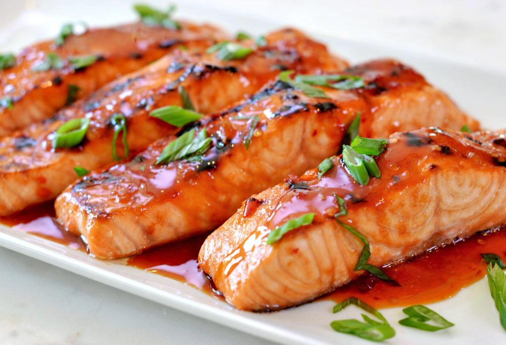

Judith
Lambda School
HTML/CSS homework
My fave food is scorched corn grits. It's a poor man's staple food here but I only love the overcooked part.
And my fave restaurant is
Buffet 101.
Other faves are:
Dark chocolate
Salmon 
 Salmon

Salmon
